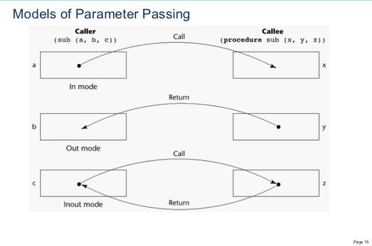

on
Subprograms
Introduction
In this article, I am going to explain subprograms in programming languages. Subprogram provides some abstraction while building a program. When we write a program, we want to reuse statements in different places and different times. In modern programming language, we collect all statements in a subprogram. It will give us some conveniences like memory space, coding time, and reusable codes. We call the subprogram from several places in our code blocks and details are hidden by calling only subprogram. Also, this can ensure writing more readable codes.
Fundamentals of Subprograms
- Each subprogram has a single entry point.
- The calling program unit is suspended during the execution of the called subprogram, which impiles that there is only one subprogram in execution at any given time.
- Control always returns to the caller when the subprogram execution terminates.
Definitions
Subprogram definiton: Describes the interface to and the actions of the subprogram abstraction. There is a difference in Python subprogram definitions. In Python, function definitions can be executable and when you call the function, it will be executed. Let’s look an example.
a = 1
if a > 1:
def func():
print("a is bigger than 1")
print("If block is executing")
else:
def func():
print("a is not bigger than 1")
print("Else block is executing")
func()
# Else block will be executed
# a is not bigger than 1
# Else block is executingIn this example, a is declared as an integer variable and its value is 1. After the if-else blocks, we call func() and program executes else block, because “a is not bigger than 1”. So, in this case, function declarations was executed and produced output. If we were declared a with bigger than 1, i.e. 9, the program would be executed if block and prints out the a is bigger than 1 If block is executing messages.
a = 1
if a > 1:
def func():
print("a is bigger than 1")
print("If block is executing")
else:
def func():
print("a is not bigger than 1")
print("Else block is executing")
func()
a = 9
func()
# Else block will be executed in both function callsWhat would happen if we changed the a value. Nothing! Changing the value after the if-else blocks, does not affect the execution of if-else statements. a remains 1, in this example. So, output of this function is the same for both func() calls.
Subprogram call: A request to execute specific subprogram.
def fun(a, b):
return a + b
...
x = fun(12, 2) # Subprogram call- A subprogram is active if a subprogram is called, started to execution, but have not terminated yet.
Subprogram header: The first part of the definition. It includes name of the function and the formal parameters.
def func(params): ==> Python header
int func(params) ==> C header
In some languages, like Python, JavaScript, Ruby, and so on, the subprogram definitions are indicated with a special words, which are reserved word. You should start with these kind of reserved words when you declare a subprogram. In Python and Ruby, def indicates that it is a subprogram, wheares function in JavaScript.
The body of the subprograms defines the actions. There are several ways of showing body in different languages. In C-based languages, you delimited by using curly brackets. In Ruby, end statement terminates the body of the subprogram. In Python, indentations play important role.
Parameter profile: It contains the number, order, and types of formal parameters.
Protocol: Subprogram’s parameter profile and if it is a function, its return type.
fun(int a, char c, float f) ==> Parameter profile
int fun(int a, char c, float f) ==> Protocol
Function declarations in C and C++ are called as protocol and they often place in header files. Also, subprogram declaration provides the protocol, not the body of the subprogram.
Parameters
Basically, there are two different ways to access data in subprograms. The first one is accessing nonlocal variables which are defined elsewhere and visibile in subprograms. The second one is passing parameters to subprograms. Accessing nonlocal variables is not a good choose, it leads to some problems. It may reduce the reliability, and it is not a good that we want. We should avoid to access and use nonlocal variables. In the second way, passing parameters, it is more convenient and reliable. When we pass a parameter to subprogram, we actually creates the local variables that are defined in subprograms.
Formal Parameters vs. Actual Parameters
Parameter in header is formal parameter and, generally, called as dummy variable. They are just show that parameter places and, when the subprogram calls they bind to other variables. For instance, if we have a subprogram in Python and declared as def fun(a, b, c):, in this case, a, b, c are formal parameters. Actual parameter uses in subprogram call statements, and represents value or address. For example, when we call fun() function in elsewhere, fun(1, 2, 3), in this case, 1, 2, 3 are actual parameters.
To bind actual parameters to formal parameters is another important part of the subprograms. Binding can be done in two different ways. The first method is, positional parameters. It basically binds the first actual parameter to the first formal parameter, the second actual parameter to the second parameter, and so on. It is a good method, because it is safe and effective. Nevertheless, if parameter list is long, programmer can make parameter order mistakes. In this case, keyword parameters is a good method. The order is not important, but the formal names are important. The main advantage of keyword parameters is order is not important, so parameters can appear in any order and parameter correspondence errors can be avoided. On the other hand, the main disadvantage is programmer must know the formal parameter’s names. Python, Ada, Fortran 95+ allows the keyword parameters.
Example: sumer (length=my_length, arr=my_arr, total=my_total) ==> Python (Keyword Parameters)
Python, Ada and Fotran 95+ allows us to combine both positional and keyword parameters. For example, sumer(my_length, arr=my_arr, total=my_total) is valid. The only restriction is after a keyword parameter is shown in parameter list, all parameters must be keyworded. So, sumer(length=my_length, arr, total=my_total) is a wrong function call, because length=my_length is a keyword parameter and after this one there is a positional parameter.
Some languages, like C++, Python, Ruby, Ada, PHP can have default parameters. A default value can be used if no actual parameter is passed to the formal parameter in the subprogram header. For instance, we have a Python header:
def save_student(name, surname, age=20):
...
save_student("jack", "jones")
save_student("jack", "jones", 23)The save_student function has a default parameter, age. If you pass a value for age, this value will be used while execution of the subprogram. When you call save_student like this, save_student("jack", "jones", 23), the age will be 23. But, if you do not any parameter for age, the subprogram will use 20. For example, when you call save_student("jack", "jones"), the age will be 20. In C++, default parameters must be appear last because parameters are positionally associated.
Procedures and Functions
There are two distinct categories of subprograms: procedures and functions. Procedures are collections of statements and they define new statements. Actually, in most languages, procedures do not include as a separate form of subprograms. Functions can be defined as procedures. Functions structurally resemble procedures but semantically modeled on mathematical functions. They just return values. The main difference is functions return values, procedures do not. For example, you want to search a special value in array, but there is not a procedure to make this operation. So, you can write a procedure that searches the value in given array, and you can call it when you need whenever.
Procedures can produce results in 2 different methods: The first method is, changing the not formal parameter values which can be visible in procedure. The second method is, if the procedure has formal parameters that allow the transfer of data to the caller, those parameters can be changed.
a = 12
def fun(x, y):
x += 2 # Second method, formal parameter value is changed
y -= 3 # Second method, formal parameter values is changed
a = x + y # First method, not formal parameter but visible in fun is changed
fun(4, 5)Functions, return the values. It can change both formal parameter value or any variable defined outside the function. In pure function returns a value, it does not effect. Nevertheless, in most languages, functions have side effects. Only return value expected to be effect.
# Pure function
def divide(x, y):
return x / y # Only return value is effect
a = divide(12, 4)Semantic Models of Parameter Passing
Formal parameters are characterized by one of three distinct semantics models: (1) They can receive data from corresponding actual parameter, (2) they can transmit the actual parameter, and (3) they can do both. They are named as in mode, out mode and inout mode, respectively.
- In mode, the data is not being changed by subprogram.
- Out mode, if there is no initial value and its value must be returned to the caller.
- Inout mode, subprogram needs the given value, and must return its new value.

Pass-by-Value (In Mode)
Value of the actual parameter is used to initialized the corresponding formal parameters. After passing value, formal parameters acts as a local variable of the subprogram. Normally implemented by copying, because it is more efficient.
-
Advantages: It is fast, in both linkage cost and access time. Actual variable is protected.
-
Disadvantages: Additional storage is required for the formal parameter. Also, it can be costly for large parameters. For example, an array with large elements might be costly.
int n;
procedure prod(int k) {
n = n + 1; // n = 1
k = k + 4; // k = 4
print(n); // prints --> 1
}
n = 0;
p(n); // n = 1 when after subprogram
print(n); // prints --> 1
int list[4] = {5, 7, 9, 11};
int i;
void fun(int a, int b) {
i = 2;
if (a < b) {
a = a + i; // a = 7
i = i + 1; // i = 3
b = b - i; // b = 4
}
print(list[1], list[2], list[3], list[4]);
// prints out ==> 5 7 9 11
}
main() {
i = 1;
fun(list[i], list[i+1]); // call as fun(5, 7)
print(list[1], list[2], list[3], list[4]);
// prints out ==> 5 7 9 11
}Pass-by-Result (Out Mode)
When a parameter is passed by result, no value is transmitted to the subprogram. The corresponding formal parameter acts as a local variable, but at the end of the subprogram, its value is transmitted back to the caller’s actual parameter.
Nevertheless, there are potential problems. The first problem is which parameter is copied back will represent the current value. For example;
subprogram sub(x, y) {
x <- 3;
y <- 5;
}
sub(p, p) // p = 5Which value will be returned? 3 or 5? This problem fixed with given order precedence. The last assigned value will be returned to p. It means that the order is important. So, p will be 5 after executed sub().
Other problem is time to evaluate the address of the actual parameter. There are two possible evaluation method, at the time of the call and at the time of the return. Actually, there is not a general rule for fixing problem. The decision up to language designer. Let’s talk an example.
void DoIt(out int x, int index) {
x = 17;
index = 42
}
...
sub = 21;
DoIt(list[sub], sub) The address of list[sub] is changed on the function, so 17 will be assigned to list[42] or list[21]? If the address evaluation is done at the beginning of the subprogram, 17 will be assigned to list[21], because we have not changed the index, yet. On the other hand, if we evaluate the address at the end of the subprogram, 17 will be assigned to list[42].
Pass-by-Value-Result (Inout Mode)
It can think of combination of pass-by-value and pass-by-result. The actual value is used to initialize the formal parameter. Then, it acts as a local variable. Formal parameters have local storage. At termination, the value of the formal parameter is copied back. Also, pass-by-value-result is called as pass-by-copy, because actual parameter is copied to the formal parameter at the subprogram entry, and then copied back to subprogram termination.
int n;
procedure prod(int k) {
n = n + 1; // n = 1
k = k + 4; // k = 4
print(n); // prints --> 1
}
n = 0;
p(n); // n = 4 when after subprogram
print(n); // prints --> 4
Pass-by-Reference (Inout Mode)
The second implementation model for inout model. Rather than copying the data, it passes the address of the data. Also, pass-by-reference called as pass-by-sharing. Actual parameter is shared with the called subprogram, and sharing actual data has bad results. I am going to dive into more details later. Basically, pass-by-reference, transmits an access path to the called subprogram rather than copying data. Passing address is more efficient, in terms of time and space. Also, it does not require duplicated storage, because we can access the actual parameter by using address. However, it has slower accesses than pass-by-value, because of additional level of indirect addressing. Moreover, potentially collisions and unwanted aliases would be occured. It is harmful to readability and reliability.
int n;
procedure prod(int k) {
n = n + 1; // n = 1
k = k + 4; // n = 5, actually n and k are point to the same variable because of address
print(n); // prints --> 5
}
n = 0;
p(n); // n = 5 when after subprogram
print(n); // prints --> 5
int list[4] = {5, 7, 9, 11};
int i;
void fun(int a, int b) {
i = 2;
if (a < b) {
a = a + i; // a = 7 --> list[1] = 7
i = i + 1; // i = 3
b = b - i; // b = 4 --> list[2] = 4
}
print(list[1], list[2], list[3], list[4]);
// prints out ==> 7 4 9 11
}
main() {
i = 1;
fun(list[i], list[i+1]); // a = list[1], b = list[2]
print(list[1], list[2], list[3], list[4]);
// prints out ==> 7 4 9 11
}Pass-by-Name (Inout Mode)
It is an inout mode parameter transmission method. Basically, the actual parameters are being substituted with formal parameters that are occurrences in subprogram. The main advantage is flexibility. Nevertheless, disadvantages of the pass-by-name are slow execution, difficultto implement and confusing. That’s why pass-by-name is not a part of widely used programming languages.
int list[4] = {5, 7, 9, 11}
int i;
void fun(int a, int b) {
i = 2;
if (a < b) {
a = a + i;
i = i + 1;
b = b - i;
}
print(list[1], list[2], list[3], list[4]);
}
main() {
i = 1;
fun(list[i], list[i+1]);
print(list[1], list[2], list[3], list[4]);
}Let’s give an example. Consider that we have a function like above and we use pass-by-name transmission. We actually change the formal parameters with actual parameters. In fact, our subprogram would be like below.
int list[4] = {5, 7, 9, 11}
int i;
void fun(int a, int b) {
// a --> list[i]
// b --> list[i+1]
i = 2;
if (list[i] < list[i+1]) {
list[i] = list[i] + i; // list[2] = list[2] + 2 ==> list[2] = 9
i = i + 1; // i = 3
list[i+1] = list[i+1] - i; // list[4] = list[4] - 3 ==> list[4] = 8
}
print(list[1], list[2], list[3], list[4]);
// prints out ==> 5 9 9 8
}
main() {
i = 1;
fun(list[i], list[i+1]); // we actually call like fun(list[i], list[i+1])
print(list[1], list[2], list[3], list[4]);
// prints out ==> 5 9 9 8
}Conclusion
I have covered subprograms and parameter passing in this article. If you have any question or catch my mistake, please do not hesitate to contact with me. Happy new year!